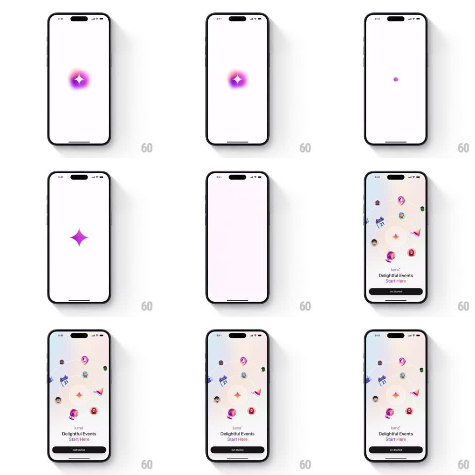

Media
Frame-by-frame

Rebuild this animation 1:1: Luma's splash - a glowing gradient orb collapses to a point and bursts into a radial constellation of colorful event icons that settle over the onboarding screen.

Rebuild this animation 1:1: Luma's splash - a glowing gradient orb collapses to a point and bursts into a radial constellation of colorful event icons that settle over the onboarding screen. ## Integration Integration: stack-agnostic spec - springs given as stiffness/damping, timed motions as duration + curve; map every value to your framework and animation library of choice. ## Scene A white screen with a soft pink-violet glowing orb (a four-point sparkle at its core). The orb collapses to a dot, then explodes outward into a floating field of colorful icons - calendars, avatars, tickets, sparkles - arranged in a loose radial constellation over a pastel gradient, above "Delightful Events Start Here." and a black Get Started button. ## Motion spec Pattern: big-burst constellation reveal. - Stage 1 (0-800ms): the orb breathes (glow radius +-10%, 800ms) with its core sparkle twinkling (scale 0.9 to 1.1, opacity 0.7 to 1). - Stage 2 (800-1100ms): the orb implodes - shrinks to a 6px dot (300ms, ease-in) with a brief brightness spike. - Stage 3 (1100-1700ms): the burst - 12-16 icons fire outward from the dot along radial paths (spring ~260/16 per icon, staggered 25ms, travel 15-35% of screen height), each rotating slightly (+-15deg) and decelerating into its resting spot; a soft pastel gradient washes in behind them. - Stage 4: icons idle with gentle float (translateY +-6px, individual phases, 3-4s loops); the wordmark fades in, then "Delightful Events" and "Start Here." (the latter in pink) stagger up (translateY 12px, 250ms, 100ms apart), and Get Started rises last (translateY 16px + fade, 300ms). - Icons nearest the text nudge aside slightly (parallax repel, 8px) so type stays legible. ## Calibration - The burst is the payoff: icons must visibly originate from the single dot, not fade in place. - Icon colors stay candy-bright against the pastel field; no dark icons. ## Reduced motion Crossfade from orb to the settled constellation. ## Don't miss - "Start Here." is the only pink text - it rhymes with the orb's glow color. - The constellation is asymmetric and hand-scattered; don't grid the icons.